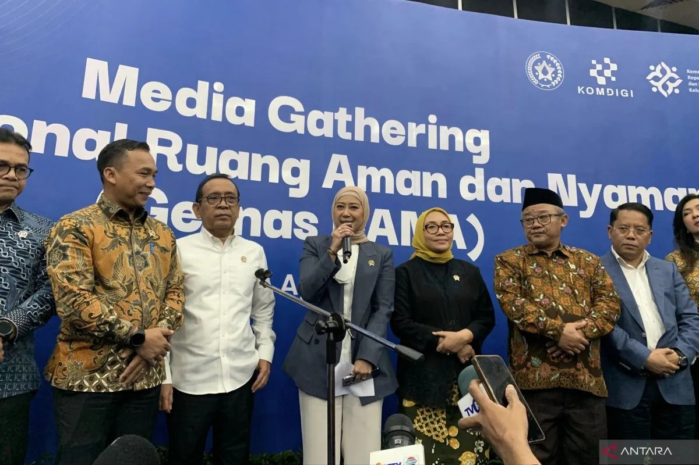

Jakarta (ANTARA) - Menteri Komunikasi dan Digital (Menkomdigi) Meutya Hafid mengatakan penurunan sekitar lima
juta akun anak di platform digital sebagai implementasi Peraturan Pemerintah tentang Tata Kelola Penyelenggaraan
Sistem Elektronik dalam Pelindungan Anak (PP Tunas) telah melampaui capaian penurunan akun yang dilakukan TikTok
di Australia.
"Bersama platform kita sudah melakukan penurunan lima juta akun (anak). Meskipun lima juta pengguna masih kecil
dibandingkan target kita, kalau dalam hitungan dunia, ini sudah mengalah kan yang dilakukan TikTok di Australia,"
kata Meutya di Kantor Kementerian Komunikasi dan Digital (Kemkomdigi), Jakarta, Selasa.
Menurut Meutya, Indonesia menerapkan pendekatan berbeda dalam melindungi anak di ruang digital dibandingkan
sejumlah negara, termasuk Australia.
Jika Australia menerapkan pembatasan berdasarkan usia, Indonesia menggunakan pendekatan berbasis tingkat risiko
platform sebagaimana diatur dalam PP Tunas.
"Australia misalnya melakukan total ban, kita melakukan penilaian risiko. Jadi yang kita larang untuk usia di
bawah 16 tahun adalah akses ke platform berisiko tinggi," ujarnya.
Menurut dia, pendekatan berbasis risiko mempertimbangkan sejumlah aspek, antara lain fitur percakapan (chat),
konten yang tidak layak bagi anak, potensi kecanduan, dampak terhadap kesehatan mental, perlindungan data
pribadi anak, serta pemanfaatan data anak untuk kepentingan periklanan dan komersialisasi.
Ia mengatakan PP Tunas juga mendorong platform digital menyesuaikan fitur dan layanannya agar tingkat risiko
dapat diturunkan.
Sebagai contoh, Roblox menonaktifkan fitur chat bagi pengguna di Indonesia yang berusia di bawah 16 tahun. Fitur
tersebut hanya dapat diaktifkan kembali dengan persetujuan orang tua.
Meutya berharap PP Tunas tidak hanya membatasi anak membuat akun pada platform yang tidak sesuai dengan usianya,
tetapi juga mendorong penyelenggara platform digital memperkuat perlindungan anak di ruang digital.
"Kita harapkan ke depan bukan hanya larangan bagi anak membuat akun di platform digital, tetapi juga gerakan
yang lebih menyeluruh agar platform ikut berubah," katanya.
Namun, Meutya mengakui implementasi PP Tunas masih menghadapi tantangan, terutama dalam penerapan sistem
verifikasi usia.
"Tidak semua platform sudah memberikan bukti mereka telah mengadopsi teknologi terbaik untuk verifikasi usia,
yang kita yakini mampu diterapkan apabila mereka berinvestasi," ujarnya.
Menurut dia, platform memiliki berbagai pilihan metode verifikasi usia, seperti teknologi pengenalan usia (age
inference), verifikasi foto, maupun analisis perilaku pengguna.
Hingga kini, Kemkomdigi telah menerima penilaian mandiri (self-assessment) dari 200 platform dan 79
Penyelenggara Sistem Elektronik (PSE). Delapan platform di antaranya menyatakan layanannya masuk kategori
berisiko tinggi.
Menurut Meutya, mekanisme penilaian mandiri tersebut menjadi langkah awal untuk mendorong transparansi platform
terhadap tingkat risiko layanannya sekaligus memperkuat perlindungan anak di ruang digital.
"Jadi ini yang kita harapkan bahwa nantinya ini gerakan seperti rating film. Tidak harus pemerintah yang bilang
'kamu risiko tinggi', mereka mengaku dengan sendirinya," kata Meutya.
